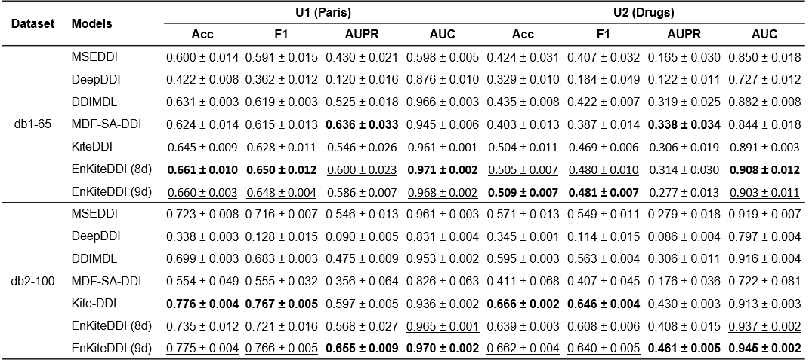
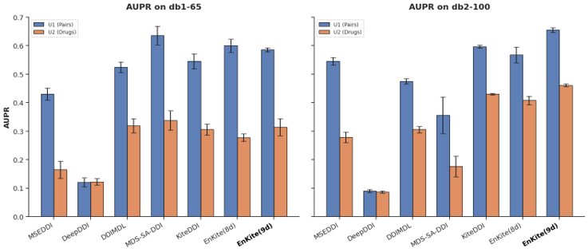

Drug-drug interactions (DDI) can cause serious adverse events, and modern event-based DDI prediction models still struggle to exploit literature evidence at the pair level and to generalize under severe class imbalance. We propose EnKiteDDI, a literature-enhanced extension of KiteDDI that keeps the original SMILES encoder and DRKG-based knowledge graph (KG) branch unchanged, and augments them with a compact SemMedDB-derived feature vector for each drug pair. Our final configuration, EnKiteDDI (+PMID, 9-dim), augments KiteDDI with an interpretable SemMedDB-derived pairwise feature vector encoding relation presence, predicate types, co-occurrence frequency, and the number of supporting PubMed articles (PMIDs), enabling improved prediction and traceability to the literature. We compare the proposed method with representative baselines on two DrugBank-derived benchmarks, db1-65 and db2-100, under validation, unseen-pair (U1), and unseen-drug (U2) splits. Together with an ablation study, experimental results demonstrate that low-dimensional, literature-derived pairwise signals offer an effective and practical way to enhance KG-integrated DDI models.
Developed EnKiteDDI, a novel extension of the KiteDDI architecture for event-based DDI prediction. The project enhances traditional knowledge graph-based DDI models by incorporating literature-derived evidence from SemMedDB to improve prediction accuracy, interpretability, and robustness under highly imbalanced biomedical datasets
Built a literature-enhanced deep learning framework that combines Transformer-based SMILES molecular encoding, DRKG biomedical knowledge graph embeddings, and SemMedDB-derived pairwise literature features to improve event-based drug–drug interaction prediction. The model integrates compact PMID-supported biomedical relation features into the original KiteDDI architecture through an additional MLP fusion module and was evaluated under unseen-pair and unseen-drug inductive settings on DrugBank-derived benchmarks.
EnKiteDDI consistently matched or outperformed multiple state-of-the-art DDI prediction baselines across the db1-65 and db2-100 benchmarks, particularly improving AUPR and AUC under severe class imbalance and unseen-drug evaluation settings. The proposed PMID-enhanced feature design improved both predictive performance and model interpretability by linking interaction predictions to supporting biomedical literature evidence. Experimental results demonstrated that compact literature-derived signals can effectively enhance knowledge graph-integrated DDI models while maintaining scalability and low feature complexity.

